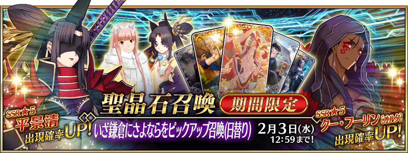
◆「來向鎌倉道別吧Pick Up召喚(每日交替)」期間◆
期間:2021年1月20日(三) 17:00～2月3日(三) 11:59
預定舉辦期間限定「來向鎌倉道別吧Pick Up召喚(每日交替)」！
本次從期間限定活動「來向鎌倉道別吧 ～Little Big Tengu～」關聯從者之中，包含1位新登場從者的下述從者Pick Up！
▼期間限定從者
【每日交替Pick Up】
・★5(SSR)平景清
▼Pick Up從者
【每日交替Pick Up】
・★5(SSR)女王梅芙(Rider)
・★5(SSR)庫・夫林〔Alter〕
【常駐Pick Up】 ・★3(R)牛若丸(Rider)
另外，下述的期間限定概念禮裝常駐Pick Up！
【常駐Pick Up】
・★5(SSR)一寸姫
・★4(SR)禅の箱庭
・★3(R)腰を掛け
裝備上述3種概念禮裝的話，在期間限定活動「來向鎌倉道別吧 ～Little Big Tengu～」中會提升活動道具的掉落獲得數。
Pick Up期間中，Pick Up對象從者與概念禮裝的出現機率提升！
詳情請在聖晶石召喚畫面左下的召喚詳細確認。
11次召喚中確定1張★4(SR)以上和確定1位★3(R)以上的從者！ ※確定★4(SR)以上包含從者和概念禮裝。 ※本頁面皆為開發中圖片。會有與實際圖片相異的情況。
◆有關從者的注意◆
※請注意本召喚做為每日交替，下述的從者就算舉辦期間中也有不會被抽出來的日子。
・★5(SSR)平景清
・★5(SSR)女王梅芙(Rider)
・★5(SSR)庫・夫林〔Alter〕
※下述的從者在Pick Up期間結束後不會追加到故事召喚。・★5(SSR)平景清
※本召喚的Pick Up期間中，透過故事進行所追加的下述從者就算通過各章前也能入手。
・★5(SSR)女王梅芙(Rider)
・★5(SSR)庫・夫林〔Alter〕
※下述的從者在Pick Up期間結束後仍會在故事召喚被抽出。
・★5(SSR)女王梅芙(Rider)
・★5(SSR)庫・夫林〔Alter〕
・★3(R)牛若丸(Rider)
◆有關概念禮裝的注意◆
※請注意會做為抽出對象的期間限定概念禮裝只限下述的概念禮裝，其他的期間限定概念禮裝為抽出對象外。
・★5(SSR)一寸姫
・★4(SR)禅の箱庭
・★3(R)腰を掛け
※下述的概念禮裝，Pick Up期間中也能靠友情點數召喚獲得。
・★3(R)腰を掛け
※在自動變還設定登錄★3(R)概念禮裝的情況，下述的概念禮裝會變成自動變還的對象。
・★3(R)腰を掛け
◆「來向鎌倉道別吧Pick Up召喚(每日交替)」Pick Up內容◆
| Pick Up期間 | Pick Up內容 | |
|---|---|---|
| 每日交替Pick Up | 全天Pick Up | |
|
1/20(三) 17:00～ 1/22(五) 22:59 |
★5 平景清 | ★3 牛若丸(Rider) |
| 1/22(五) 23:00～1/23(六) 22:59 |
★5 平景清 ★5 女王梅芙(Rider) |
|
| 1/23(六) 23:00～1/24(日) 22:59 |
★5 平景清 ★5 庫・夫林〔Alter〕 |
|
| 1/24(日) 23:00～1/25(一) 22:59 | ★5 平景清 | |
| 1/25(一) 23:00～1/26(二) 22:59 |
★5 平景清 ★5 女王梅芙(Rider) |
|
| 1/26(二) 23:00～1/27(三) 22:59 | ★5 女王梅芙(Rider) | |
| 1/27(三) 23:00～1/28(四) 22:59 |
★5 平景清 ★5 庫・夫林〔Alter〕 |
|
| 1/28(四) 23:00～1/29(五) 22:59 | ★5 庫・夫林〔Alter〕 | |
|
1/29(五) 23:00～ 2/1(一) 22:59 |
★5 平景清 | |
| 2/1(一) 23:00～2/2(二) 22:59 |
★5 平景清 ★5 女王梅芙(Rider) |
|
| 2/2(二) 23:00～2/3(三) 11:59 |
★5 平景清 ★5 庫・夫林〔Alter〕 |
|
※請注意會以每日交替變更Pick Up的從者。
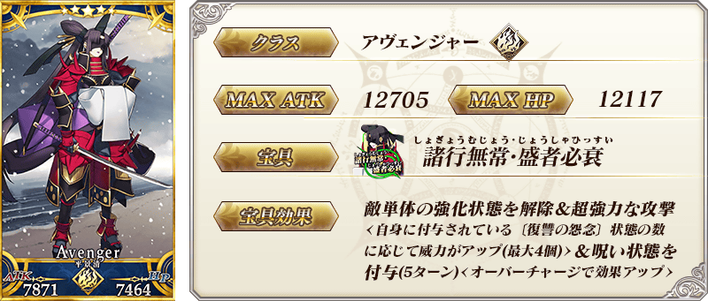 ※上述「★5(SSR)平景清」的卡面為靈基再臨第1階段。


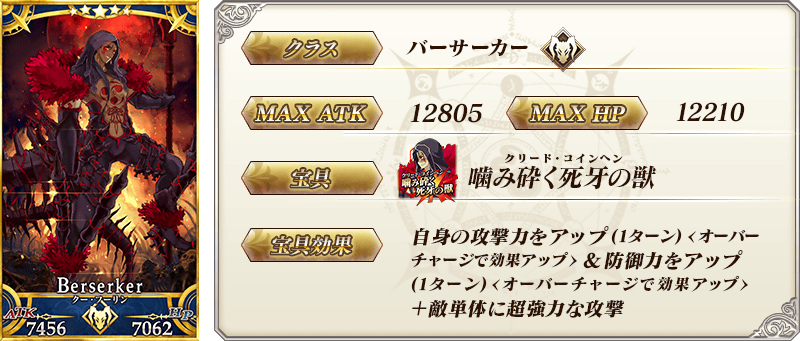 ※上述「★5(SSR)庫・夫林〔Alter〕」的卡面為靈基再臨第1階段。
 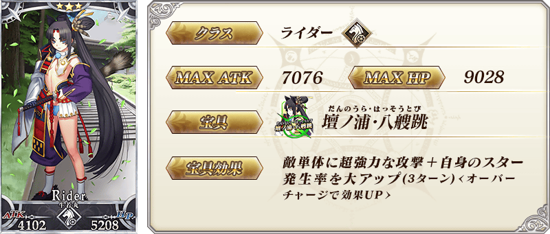
※1月20日(三) 17:00圖片修正
※上述「★3(R)牛若丸(Rider)」的卡面為靈基再臨第1階段。
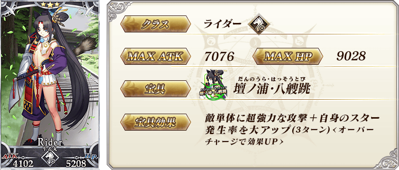
※1月20日(三) 17:00圖片修正
※上述「★3(R)牛若丸(Rider)」的卡面為靈基再臨第1階段。
| 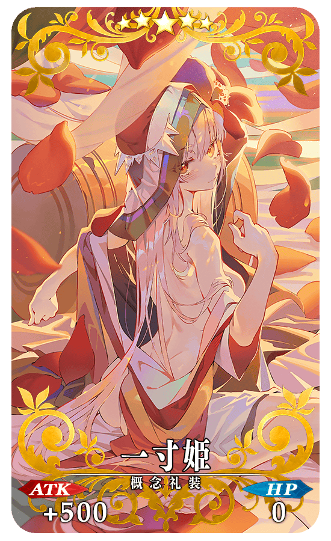 |
★★★★★SSR |
| 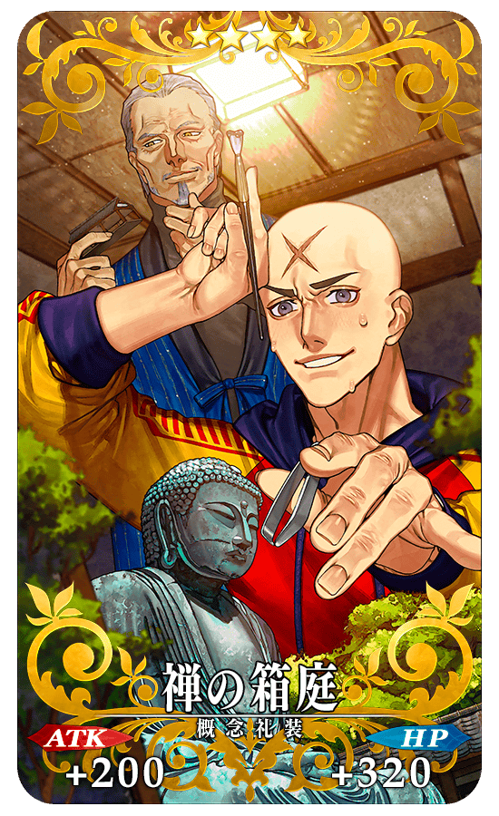 |
★★★★SR |
| 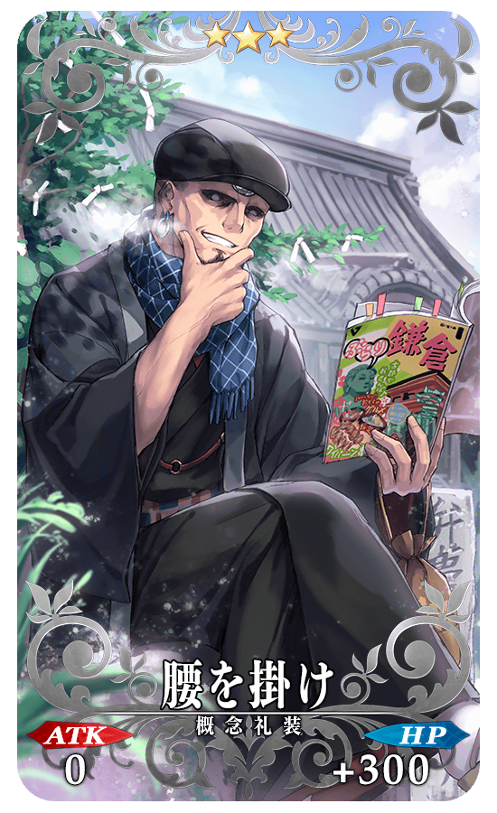 |
★★★R |

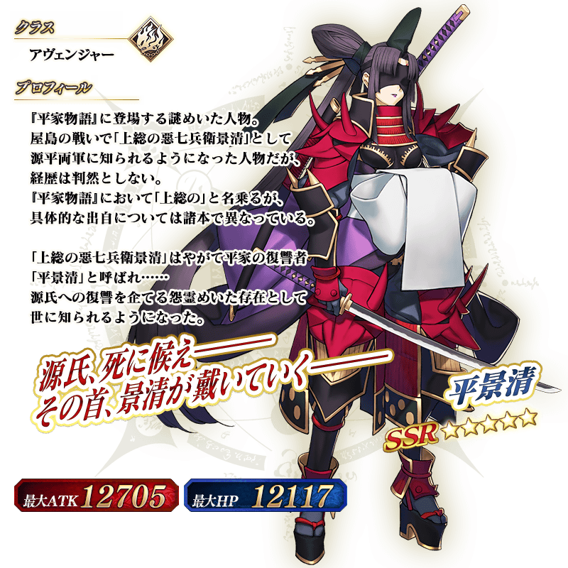 ※上述「★5(SSR)平景清」的立繪為靈基再臨第1階段。

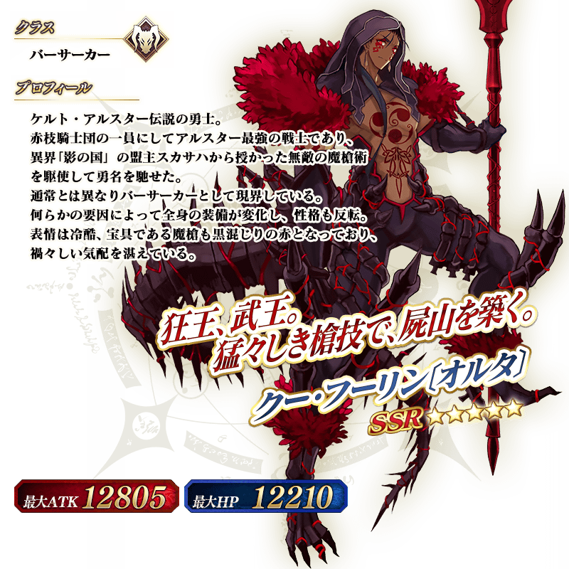 ※上述「★5(SSR)庫・夫林〔Alter〕」的立繪為靈基再臨第1階段。
在2017年舉辦的期間限定活動「Death Jail・夏日逃脫 ～罪與絶望的梅芙大監獄2017～ 」及在2018年舉辦的期間限定活動「復刻:Death Jail・夏日逃脫 ～罪與絶望的梅芙大監獄2017～ 輕量版」中登場的「★5(SSR)女王梅芙(Rider)」靈衣「魅惑的典獄長服飾(魅惑の獄長ルック)」開放權在達文西工房的「稀有稜鏡交換」追加！
可用稀有稜鏡5個交換上述靈衣開放權入手。
另外，想開放靈衣的話，除了靈衣開放權外再加上必須滿足一些開放條件。
◆追加時間◆
2021年1月20日(三) 17:00～
◆交換條件◆
滿足以下條件的御主才能交換
・通過「特異點F 炎上汙染都市 冬木」
・未入手靈衣「魅惑的典獄長服飾」開放權
※在「稀有稜鏡交換」追加的靈衣「魅惑的典獄長服飾」開放權為永久，沒有交換期限。 ※關於已獲得交換對象靈衣開放權的玩家，無法交換。
◆有關靈衣開放權的注意◆
※本次追加的「★5(SSR)女王梅芙(Rider)」靈衣會配合外觀變化一部份語音。
※請注意未持有「★5(SSR)女王梅芙(Rider)」的情況，可入手靈衣開放權。但無法進行靈衣開放。
◆追加道具(永久)◆
| 追加道具 | 能交換次數 | 1次交換所需的 稀有稜鏡數 |
|---|---|---|
| 靈衣「魅惑的典獄長服飾」開放權 | 1次 | 5個 |
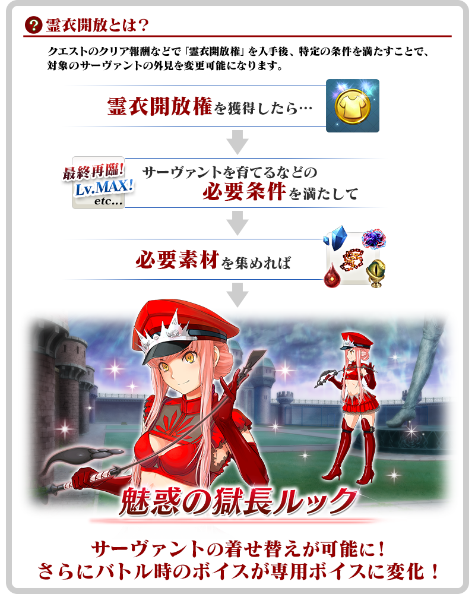

「靈衣開放」是自強化畫面進行。
※「靈衣開放」後會自動切換戰鬥角色和圖示。若想回到「靈衣開放」前的狀態和變成其他再臨階段的情況，可自從者詳細畫面變更。 ※進行「靈衣開放」不會讓職階和能力等有所變化。
介紹開放靈衣「魅惑的典獄長服飾」的「★5(SSR)女王梅芙(Rider)」寶具演出！
在「Fate/Grand Order」官方網站內的公告中，以影片公開寶具演出，敬請確認。
【1月20日(三) 17:00追記】
「★3(R)牛若丸(Rider)」的戰鬥動作及寶具演出翻新！
另外，伴隨對一部份裝置全螢幕顯示的對應，2位的寶具演出寶具演出也對應到全螢幕顯示。
在「Fate/Grand Order」官方網站內的公告中，以影片公開寶具演出，敬請確認。
◆翻新實施時間◆
2021年1月20日(三) 17:00～
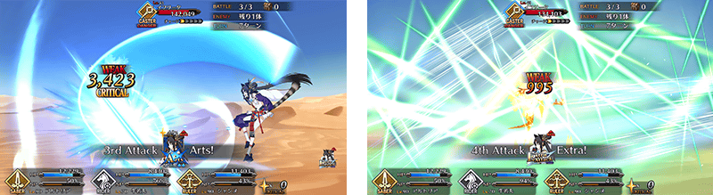
介紹「★5(SSR)平景清」的寶具演出！
「★5(SSR)平景清」的寶具演出於一部份裝置有對應全螢幕顯示。
在「Fate/Grand Order」官方網站內的公告中，以影片公開寶具演出，敬請確認。
介紹在本召喚Pick Up的2位從者寶具演出！
「Fate/Grand Order」在官方網站內的公告中，以影片公開寶具演出，敬請確認。
【★5(SSR)女王梅芙(Rider)】
【★5(SSR)庫・夫林〔Alter〕】
【1月20日(三) 17:00追記】
強化本召喚中登場的「★3(R)牛若丸(Rider)」的特別關卡「從者強化關卡」，在迦勒底之門永久追加。
不僅進行對象從者的強化，也可獲得聖晶石做為關卡通過報酬。
※請注意在從者強化關卡沒有文字冒險部份。
◆追加時間◆
2021年1月20日(三) 17:00～
◆開放條件◆
持有的強化對象從者，必須使其最終再臨。
※未持有對象從者的話，不會出現關卡。
※關卡沒有舉辦期限。
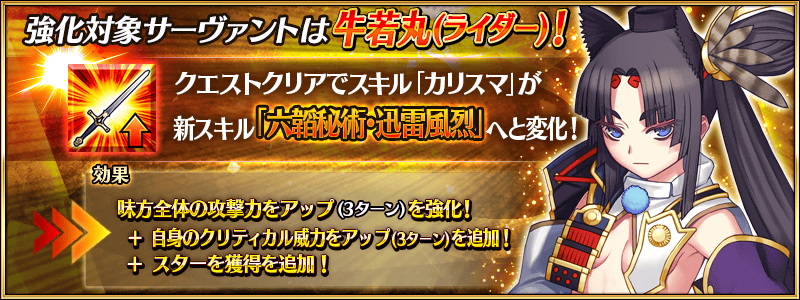
其他還有，期間限定活動「來向鎌倉道別吧 ～Little Big Tengu～」同時舉辦！
關於詳情，請自下述橫幅確認。
■「來向鎌倉道別吧 ～Little Big Tengu～」詳細情報 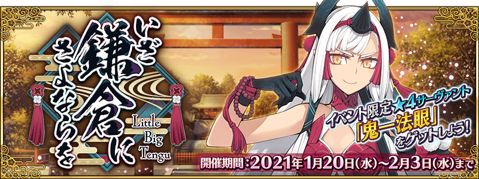